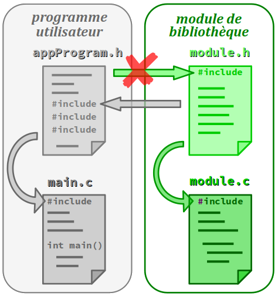

Le concept de programmation modulaire a été maintes fois évoqués dans les chapitres de ce module de formation – et dès le tout premier (cf. chap. C1‑I ). L'enjeu principal n'est pas seulement de pouvoir répartir le code d'un programme sur plusieurs fichiers pour mieux le maîtriser. Il est aussi de produire autant que possibles des modules qui soient des composants logiciels réutilisables pour toutes sortes de programmes.
C'est d'ailleurs dans cette perspective que les langages C et C++ sont construits : autour d'un noyau assez réduit, ils acceptent un nombre illimité de modules de bibliothèque d'objets et de fonctions – et en particulier l'ensemble qui forme ce qu'on appelle la bibliothèque standard du langage, à laquelle le chapitre suivant (cf. chap. C4‑VII ) est en grande partie consacré.
En C et C++, le codeur est en mesure de produire ses propres modules de bibliothèque. Et il peut les regrouper dans des répertoires identifiés par l'environnement de programmation – c'est‑à‑dire ciblés par une variable de chemin – afin de ne pas avoir à spécifier dans les directives d'inclusion un chemin spécifique. Le codeur peut également :
- mettre en œuvre une compilation séparée des modules, c'est‑à‑dire indépendante de celle des programmes qui les utilisent ;
- utiliser les fichiers d'en‑tête comme des fichiers d'interface pour d'autres codeurs, en ne leur fournissant pas les fichiers sources d'implémentation des modules, mais seulement leurs fichiers objets déjà compilés.
Comme pour la programmation multi‑fichiers (cf. chap. C4‑V ), la création d'un module bibliothèque présente des aspects techniques qui sont spécifiques à l'environnement de programmation. Même si le principe général est le même, la procédure n'est pas la même sous Code::Blocks, VS‑Code ou Arduino IDE.
Mais surtout, au delà de la procédure technologique, il y a la dimension méthodologique dans la mesure où, en plus de la « logique d'objets » avec laquelle on procède pour coder un module, il faut d'imaginer une implémentation la plus générale possible, afin de maximiser les opportunités de réutilisation du module.
Il s'agit donc encore une fois d'un sujet complexe qu'il n'est pas possible de traiter ici en profondeur. L'objectif de ce chapitre est simplement de proposer une initiation à la programmation modulaire en adoptant une plan similaire à celui du chapitre précédent :
- donner une perspective générale avec l'IDE Code::Blocks ;
- puis à traiter un exemple détaillé avec l'IDE Arduino.
Création d'un module de bibliothèque C ou C++
Principe général – Notion de bibliothèque statique
En règle générale, la décision de créer un nouveau module de bibliothèque est prise :
- que lorsque certaines fonctions opérant sur un même type de variables (ou une même classe d'objets) sont nécessaires dans plusieurs programmes ;
- et qu'il n'existe pas d'implémentation existante de ces fonctions dans la bibliothèque standard ou dans un module déjà développé par la communauté libre – donc, sans droits d'utilisation.
Il serait contre‑productif de coder un nouveau module pour implémenter les fonctions arithmétiques calculant le plus petit commun multiple et le plus grand commun diviseur de deux nombres entiers, car ces fonctions existent déjà dans le module nommée numeric de la bibliothèque standard du C++ C++ : ce sont les fonctions gcd (greatest common divisor et lcm (least common multiple).
En langages C et C++, le principe général d'organisation du module reprend celui de la programmation multi‑fichiers, avec une décomposition du code source en deux fichiers :
- un fichier d'en‑tête, usuellement d'extension
.hqui regroupe toute la partie déclarative publique du module : directives de définition (pseudo‑constantes et pseudo‑fonctions), déclarations de types (ou classes en C++), de constantes, prototypes de fonctions ; - un fichier d'implémentation, usuellement d'extension
.cou.cpp, qui comporte une directive d'inclusion du fichier d'en‑tête et qui définit toutes les fonctions qui y sont déclarées ; il peut aussi contenir des déclarations privées avec en particulier des variables statiques…
En revanche, ni le fichier d'en‑tête ni le fichier d'implémentation du module de bibliothèque ne doivent contenir de directive d'inclusion du fichier d'en‑tête principal du programme utilisateur ou de tout autre module spécifique au programme. Sinon le module ne serait pas indépendant de ce dernier, donc pas vraiment modulaire.
De plus, dans un module, parmi les fonctions définies ne figure jamais de fonction principale main.
Dans la pratique, il est tout à fait possible de concevoir des modules plus complexes, comportant plus de deux fichiers. En particulier, il n'est pas rare qu'un module utilise lui‑même d'autres modules de bibliothèque, par le biais d'autant de directives d'inclusion dans son fichier d'en‑tête (cf. figure ci‑contre).
C'est par exemple le cas du module Arduino Timezone pour la gestion automatique de l'heure d'été dans les différentes zones horaires (cf. chap. R2‑VI R). Il utilise le module Time qui implémente toutes les fonctions de base de la gestion du temps calendaire sur une carte à microcontrôleur.
Compilation séparée d'un module de bibliothèque
Par défaut, la compilation d'un module produit un fichier objet dit de bibliothèque statique. Le terme « statique » exprime le fait que l'emploi de fonctions de ce module dans un programme nécessite l'incorporation préalable et définitive dans le code exécutable du programme lors de l'édition de lien (cf. chap. C4‑IV ).
Mais on peut également produire un fichier objet dit de bibliothèque partagée ou dynamique W. Dans ce cas, l'emploi d'une fonction de ce module dans un programme est traité par l'édition de liens par l'ajout d'un simple lien vers ce fichier dans le code exécutable du programme. C'est seulement lors de l'exécution de lien que le code de la fonction est « dynamiquement » chargé en mémoire avec le programme.
Un module de bibliothèque peut être compilé indépendamment de tout programme susceptible de l'utiliser. Sa compilation ne produit pas un programme exécutable, mais seulement un fichier objet (d'extension .o) et un fichier d'archive de bibliothèque statique (d'extension .a ou .lib).
Pour effectuer une telle compilation dans l'IDE Code::Blocks, lors de la procédure de création d'un nouveau projet, il ne faut pas sélectionner l'option Console application mais Static library. Après avoir codé les deux fichiers sources dans le répertoire de projet, il suffit de cliquer sur le bouton Build ⚙ (compilation). En l'absence d'erreur, on constate alors la création des sous‑répertoires obj et bin et à l'intérieur, la présence d'un fichier, respectivement d'extension .o et .a.
Une fois que la compilation est effectuée, le module peut être exploité dans n'importe quel programme sans nécessairement fournir son fichier d'implémentation .c ou .cpp. En revanche :
- le fichier d'en‑tête
.hreste indispensable lors de la compilation, pour que le compilateur puisse traiter l'inclusion du module dans un programme via une directive#include; - les fichiers
.oet.asont évidemment nécessaires pour l'édition de lien du programme.
Le programme bénéficiera alors d'une compilation plus rapide que si l'on avait incorporé les fichiers sources du module dans le répertoire de projet du programme, puisque le fichier d'implémentation du module est déjà compilé.
Emploi du module de bibliothèque
Pour exploiter un module de bibliothèque dans un programme, ajouter au programme une directive d'inclusion comme on le ferait pour tout module de la bibliothèque ne suffit pas, même en spécifiant le chemin relatif du répertoire du module à partir du répertoire du programme.
En effet, la chaîne de compilation ne s'achève pas comme prévu :
- certes, la compilation en elle‑même se déroule correctement,
- en revanche, l'édition de lien échoue – on obtient un message d'erreur mentionnant le programme
ldcar ce dernier ne sait pas où trouver le fichier objet.oet le fichier d'archive.adu module.
Avec l'IDE Code::Blocks, il suffit de spécifier l'emplacement du fichier d'archive .a. Deux possibilités existent :
- soit par le menu
Project, avec la commandeBuild options…; l'information renseignée est alors spécifique au programme sur lequel on travaille ; - soit par le menu
Settings, avec la commandeCompiler…; l'information renseignée est alors valable pour tous les programmes compilés avec Code::Blocks.
Quelle que soit la méthode choisie, dans la fenêtre de dialogue, il faut choisir l'onglet Linker settings et dans le cadre Link libraries, ajouter le chemin spécifiant l'emplacement des fichiers du module à l'aide du bouton Add (cf. figure ci‑contre).
Création d'un module de bibliothèque Arduino
Rappels sur les spécificités de l'IDE Arduino
Rappelons que par défaut, avec l'IDE Arduino, les fichiers objets et le fichier exécutable générés par la chaîne de compilation sont stockés dans un répertoire temporaire, donc non pérenne (cf. chap. C4‑V ).
Ainsi, on ne met pas en œuvre une compilation séparée comme avec un environnement de programmation généraliste.
On peut trouver des explications rationnelles à ce choix des concepteurs d'Arduino.
- Les programmes pour microcontrôleurs étant forcément « petits » (en comparaison de ceux que l'on peut exécuter sur un ordinateur), on ne peut espérer qu'un faible gain de temps en ne recompilant pas certaines parties du code . En ces termes, la compilation séparée systématique ne se justifie pas.
- Tout l'univers Arduino (tant les aspects matériels que logiciels) repose sur une philosophie open‑source ; en toute logique, l'IDE impose aux développeurs la publicité des fichiers sources s'ils veulent partager un programme ou un module. Obtenir le code objet d'un module pour pouvoir garder privé le code source n'est donc pas un objectif.
Toutefois, même si l'on ne peut donc pas compiler seul un module de bibliothèque, cela ne diminue en rien l'intérêt de la programmation modulaire en termes d'organisation du code en composants logiciels réutilisables.
Méthodes d'ajout d'un module de bibliothèque à l'IDE Arduino
Dans l'IDE Arduino, il existe plusieurs moyens pour ajouter un nouveau module bibliothèque A. Tout dépend de la provenance du module.
S'il s'agit d'un module déjà répertorié par la communauté des développeurs Arduino, en particulier s'il est distribué par un fournisseur de composants (Adafruit, Seeed, Grove, etc.), l'idéal est d'employer le gestionnaire de bibliothèques intégré dans l'IDE Arduino.
Les modules les plus usuels (SD, Servo, etc.) sont déjà inclus dans un répertoire principal de bibliothèques du dossier d'installation de l'IDE – typiquement sur un PC Windows :
C:\Program Files (x86)\Arduino\libraries
et sur machine Linux :
/opt/arduino-version/libraries
Si un module n'est pas encore inclus, la manière la plus usuelle de le faire consiste à passer la commande Gérer les bibliothèques dans le menu Outils. Cette commande ouvre une fenêtre qui liste dans l'ordre alphabétique l'ensemble des modules répertoriés par l'IDE.
Les modules très nombreux, il est recommandé d'utiliser la barre de recherche.
Par ailleurs, il faut savoir que certains modules sont répartis dans les répertoires spécifiques aux différents microcontrôleurs cibles de la compilation, qui sont compatibles avec l'IDE Arduino.
S'il s'agit d'un module non répertorié dont on dispose des fichiers sources (de conception personnelle ou fourni par un tiers), il faut commencer par les enregistrer dans répertoire homonyme. Ensuite, deux solutions sont possibles, aboutissant au même résultat :
- soit compresser le répertoire du module au format
zipet lancer la commande :
Ajouter la bibliothèque .ZIP…
du menuCroquis/Inclure une bibliothèque…; - soit copier directement le répertoire du module dans un répertoire « utilisateur » pour les bibliothèques, qui est par défaut inclus dans le répertoire général des programmes (« croquis ») de l'utilisateur de l'IDE Arduino, typiquement pour un PC Windows :
C:\Users\User\Documents\Arduino\librairies
et sur machine Linux :
/home/user‑name/Arduino/libraries
sachant que le chemin de ce répertoire étant modifiable dans la fenêtre Préférences à laquelle on accède via le menu Fichiers.
Attention. Il est déconseillé d'installer directement des modules dans le répertoire principal des bibliothèques, car ce dernier est entièrement effacé et réécrit lors d'une mise à jour de l'IDE Arduino. On risque donc de perdre tous les modules non standards.
Dans tous les cas, on peut ensuite vérifier que le module est bien inclus dans la liste des bibliothèques identifiées de l'IDE Arduino. Cette liste s'affiche affiche dans le sous‑menu :
Croquis/inclure une bibliothèque
On peut alors utiliser ce module via une directive #include en utilisant la syntaxe entre les chevrons < > pour spécifier le chemin d'accès au module.
Par ailleurs, il faut savoir qu'au cours d'une compilation modulaire, l'IDE Arduino recherche tout module de bibliothèque dans les divers répertoires mentionnés supra et sélectionne le premier trouvé, par ordre de priorité :
- d'abord dans le répertoire des bibliothèques « utilisateur »,
- ensuite dans les répertoires spécifiques aux microcontrôleurs cibles de la compilation,
- enfin dans le répertoire principal de bibliothèques de l'IDE Arduino
Fichiers complémentaires
Lorsqu'on souhaite diffuser un module de bibliothèque personnel au sein de la communauté Arduino, alors en plus des fichiers sources .h et .cpp, il est recommandé d'ajouter dans le répertoire du module des fichiers complémentaires pour faciliter la prise en main et l'utilisation du module par autrui :
- un fichier d'aide – typiquement nommé
readme.txt; - un fichier de coloration syntaxique – impérativement nommé
keywords.txt; - des fichiers sources
.inode programmes simples d'exemples d'application, chacun placé dans un répertoire homonyme – tous ces répertoires étant à regrouper dans un répertoireexamples.
Un exemple complet d'illustration est donné infra .
Fichier d'aide
Rappelons que les commentaires ajoutés au code pour le rendre facilement compréhensible doivent rester succins, afin de ne pas gêner sa lecture (cf. chap. C2‑IX ).
Pour fournir des explications détaillées sur le module, en particulier sur les principes d'utilisation des fonctions, il est d'usage d'ajouter un fichier d'aide au format texte (simple, non mis en forme) qu'on nomme usuellement readme.txt.
En principe, ce fichier n'a pas de limites de taille. S'il est volumineux, il est évidemment recommandé de le structurer en plusieurs parties avec des titres hiérarchisés mis en forme « à la main » pour faciliter sa lecture.
Fichier de coloration syntaxique
Ajouté dans le répertoire de module, un fichier nommé keywords.txt permet de spécifie la coloration syntaxique à appliquer dans la fenêtre d'édition de code de l'IDE Arduino pour des identificateurs sélectionnés parmi ceux introduits par le codeur dans les fichiers sources.
Ce fichier doit être présenté sous la forme d'une suite de lignes commençant chacune par un identificateur du module suivi un caractère de tabulation horizontale puis :
-
KEYWORD1pour être affiché enorange(couleur appliquée pour les types par l'IDE) ; -
KEYWORD2pour être affiché enmarron(couleur appliquée pour les fonctions par l'IDE).
Exemples d'application
Pour bien expliquer l'usage d'un module de bibliothèque, rien ne vaut un bon exemple. Il suffit donc de coder un voire plusieurs programmes d'application directe du module et placer leur code source (fichiers .ino) dans un répertoire homonyme, lui‑même placé dans un répertoire nommé examples inclus dans le répertoire du module.
Dans l'IDE Arduino, une fois le module installé, ces fichiers seront directement accessibles via le menu Fichiers/Exemples, à condition d'avoir .
Exemple de module personnel Arduino
Reprenons l'exemple du programme multiSpeedBlink développé au chapitre C4‑V .
Il comprend un module de détection des fronts montants d'un signal sur une broche du port numérique de carte Arduino.
Ce module peut être conçu pour devenir un module de bibliothèque. En effet :
- il ne dépend pas des autres modules du programme ;
- il comprend une fonction
risingEdgeayant un usage très fréquent.
Dans une perspective de réutilisation la plus large possible, on peut l'enrichir avec :
- une fonction
fallingEdgede détection des fronts descendants, - une fonction
edgede détection de fronts (indifféremment montants ou descendants), - deux fonctions
isLowetisHighde détection de niveaux logiques (respectivement bas et haut).
Dans ce module, on dispose alors de toutes les fonctions utiles pour gérer des signaux logiques sur le port numérique d'une carte Arduino.
Le répertoire de module compressé au format ZIP peut être téléchargé au lien suivant .
Fichier d'en‑tête LogicalSignals.h
#include <Arduino.h>
// Main type to be uses
struct LogicalSignal {
uint8_t pin; // pin number to be declared as INPUT our INPUT_PULLUP
byte levels; // current level on bit rank 0, previous level on bit rank 1
};
// All function prototypes
void updateSignal(LogicalSignal & signal); // to be called once in loop function
bool isLow (LogicalSignal signal);
bool isHigh (LogicalSignal signal);
bool risingEdge (LogicalSignal signal);
bool fallingEdge (LogicalSignal signal);
bool edge (LogicalSignal signal);
Fichier d'implémentation LogicalSignals.cpp
#include "LogicalSignals.h"
void updateSignal(LogicalSignal & signal) {
signal.levels <<= 1; // record previous level on bit rank 1
// copy current level on bit rank 0 and clear all bits ranging over rank 1
signal.levels = ((digitalRead(signal.pin) | signal.levels) & 0b11);
}
bool isLow (LogicalSignal signal) {
return ((signal.levels & 0b01) == 0);
}
bool isHigh (LogicalSignal signal) {
return ((signal.levels & 0b01) == 1);
}
bool risingEdge (LogicalSignal signal) {
return (signal.levels == 0b01);
}
bool fallingEdge (LogicalSignal signal) {
return (signal.levels == 0b10);
}
bool edge (LogicalSignal signal) {
return (signal.levels == 0b01 || signal.levels == 0b10);
}
Exemple d'application ledButtonSimpleCommand.ino
#include <LogicalSignals.h>
#define LED_PIN 2
#define BUTTON_PIN 4
LogicalSignal button = {BUTTON_PIN, 0b00}; // LOW level expected initially
void setup() {
pinMode(LED_PIN, OUTPUT);
digitalWrite(LED_PIN, LOW);
pinMode(BUTTON_PIN, INPUT); // positive logic
}
void loop() {
updateSignal(button);
if (risingEdge(button)) {
digitalWrite(LED_PIN, !digitalRead(LED_PIN));
}
}
Fichier de coloration syntaxique keywords.txt
LogicalSignal KEYWORD1 updateSignal KEYWORD2 isLow KEYWORD2 isHigh KEYWORD2 risingEdge KEYWORD2 fallingEdge KEYWORD2 edge KEYWORD2
Fichier d'aide readme.txt
Arduino library module "LogicialSignals"
Designed to manage logical signals on the digital port of Arduino boards
- detect both logical levels (HIGH or LOW)
- detect all kind of edges (rising, falling or both)
To detect something happening on a digital pin, you need to:
- declare a structured variable of type LogicialSignal,
(specifiing the pin number and the initial level expected on the pin)
example: LogicalSignal button = {BUTTON_PIN, 0b00}; // LOW initial level expected
- to call the update function at each iteration of loop function
example: updateSignal(button);
- to call a detection function whenever needed
example: if (risingEdge(button)) // etc.